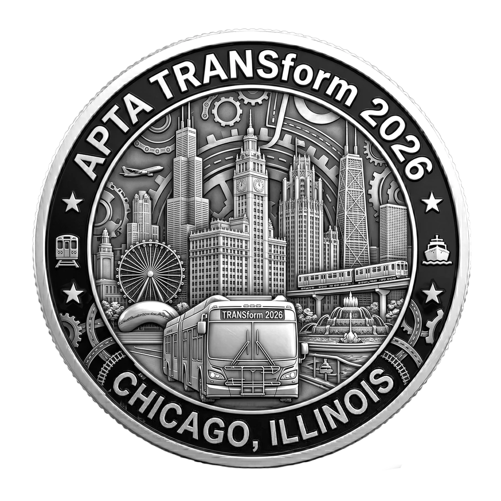

Not Collected
OCT 4–7 • Chicago, IL • Scan this coin to unlock its interaction.

OCT 4–7 • Chicago, IL • Scan this coin to unlock its interaction.
OCT 4–7 • Chicago, IL • Tap the coin in the real collection page to open details and the interaction.